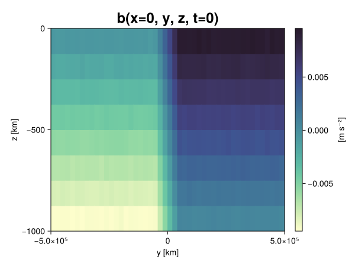
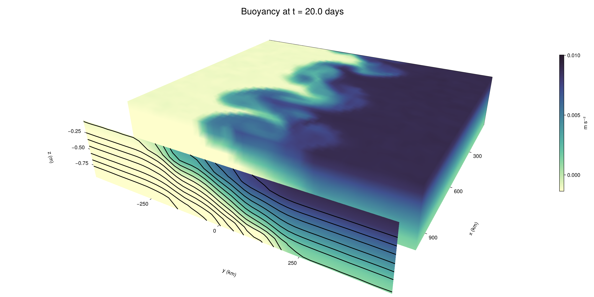

Baroclinic adjustment
In this example, we simulate the evolution and equilibration of a baroclinically unstable front.
Install dependencies
First let's make sure we have all required packages installed.
using Pkg
pkg"add Oceananigans, CairoMakie"using Oceananigans
using Oceananigans.UnitsGrid
We use a three-dimensional channel that is periodic in the x direction:
Lx = 1000kilometers # east-west extent [m]
Ly = 1000kilometers # north-south extent [m]
Lz = 1kilometers # depth [m]
grid = RectilinearGrid(size = (48, 48, 8),
x = (0, Lx),
y = (-Ly/2, Ly/2),
z = (-Lz, 0),
topology = (Periodic, Bounded, Bounded))48×48×8 RectilinearGrid{Float64, Periodic, Bounded, Bounded} on CPU with 3×3×3 halo
├── Periodic x ∈ [0.0, 1.0e6) regularly spaced with Δx=20833.3
├── Bounded y ∈ [-500000.0, 500000.0] regularly spaced with Δy=20833.3
└── Bounded z ∈ [-1000.0, 0.0] regularly spaced with Δz=125.0Model
We built a HydrostaticFreeSurfaceModel with an ImplicitFreeSurface solver. Regarding Coriolis, we use a beta-plane centered at 45° South.
model = HydrostaticFreeSurfaceModel(; grid,
coriolis = BetaPlane(latitude = -45),
buoyancy = BuoyancyTracer(),
tracers = :b,
momentum_advection = WENO(),
tracer_advection = WENO())HydrostaticFreeSurfaceModel{CPU, RectilinearGrid}(time = 0 seconds, iteration = 0)
├── grid: 48×48×8 RectilinearGrid{Float64, Periodic, Bounded, Bounded} on CPU with 3×3×3 halo
├── timestepper: QuasiAdamsBashforth2TimeStepper
├── tracers: b
├── closure: Nothing
├── buoyancy: BuoyancyTracer with ĝ = NegativeZDirection()
├── free surface: ImplicitFreeSurface with gravitational acceleration 9.80665 m s⁻²
│ └── solver: FFTImplicitFreeSurfaceSolver
├── advection scheme:
│ ├── momentum: WENO reconstruction order 5
│ └── b: WENO reconstruction order 5
└── coriolis: BetaPlane{Float64}We start our simulation from rest with a baroclinically unstable buoyancy distribution. We use ramp(y, Δy), defined below, to specify a front with width Δy and horizontal buoyancy gradient M². We impose the front on top of a vertical buoyancy gradient N² and a bit of noise.
"""
ramp(y, Δy)
Linear ramp from 0 to 1 between -Δy/2 and +Δy/2.
For example:
```
y < -Δy/2 => ramp = 0
-Δy/2 < y < -Δy/2 => ramp = y / Δy
y > Δy/2 => ramp = 1
```
"""
ramp(y, Δy) = min(max(0, y/Δy + 1/2), 1)
N² = 1e-5 # [s⁻²] buoyancy frequency / stratification
M² = 1e-7 # [s⁻²] horizontal buoyancy gradient
Δy = 100kilometers # width of the region of the front
Δb = Δy * M² # buoyancy jump associated with the front
ϵb = 1e-2 * Δb # noise amplitude
bᵢ(x, y, z) = N² * z + Δb * ramp(y, Δy) + ϵb * randn()
set!(model, b=bᵢ)Let's visualize the initial buoyancy distribution.
using CairoMakie
# Build coordinates with units of kilometers
x, y, z = 1e-3 .* nodes(grid, (Center(), Center(), Center()))
b = model.tracers.b
fig, ax, hm = heatmap(view(b, 1, :, :),
colormap = :deep,
axis = (xlabel = "y [km]",
ylabel = "z [km]",
title = "b(x=0, y, z, t=0)",
titlesize = 24))
Colorbar(fig[1, 2], hm, label = "[m s⁻²]")
fig
Simulation
Now let's build a Simulation.
simulation = Simulation(model, Δt=20minutes, stop_time=20days)Simulation of HydrostaticFreeSurfaceModel{CPU, RectilinearGrid}(time = 0 seconds, iteration = 0)
├── Next time step: 20 minutes
├── Elapsed wall time: 0 seconds
├── Wall time per iteration: NaN days
├── Stop time: 20 days
├── Stop iteration : Inf
├── Wall time limit: Inf
├── Callbacks: OrderedDict with 4 entries:
│ ├── stop_time_exceeded => Callback of stop_time_exceeded on IterationInterval(1)
│ ├── stop_iteration_exceeded => Callback of stop_iteration_exceeded on IterationInterval(1)
│ ├── wall_time_limit_exceeded => Callback of wall_time_limit_exceeded on IterationInterval(1)
│ └── nan_checker => Callback of NaNChecker for u on IterationInterval(100)
├── Output writers: OrderedDict with no entries
└── Diagnostics: OrderedDict with no entriesWe add a TimeStepWizard callback to adapt the simulation's time-step,
conjure_time_step_wizard!(simulation, IterationInterval(20), cfl=0.2, max_Δt=20minutes)Also, we add a callback to print a message about how the simulation is going,
using Printf
wall_clock = Ref(time_ns())
function print_progress(sim)
u, v, w = model.velocities
progress = 100 * (time(sim) / sim.stop_time)
elapsed = (time_ns() - wall_clock[]) / 1e9
@printf("[%05.2f%%] i: %d, t: %s, wall time: %s, max(u): (%6.3e, %6.3e, %6.3e) m/s, next Δt: %s\n",
progress, iteration(sim), prettytime(sim), prettytime(elapsed),
maximum(abs, u), maximum(abs, v), maximum(abs, w), prettytime(sim.Δt))
wall_clock[] = time_ns()
return nothing
end
add_callback!(simulation, print_progress, IterationInterval(100))Diagnostics/Output
Here, we save the buoyancy, $b$, at the edges of our domain as well as the zonal ($x$) average of buoyancy.
u, v, w = model.velocities
ζ = ∂x(v) - ∂y(u)
B = Average(b, dims=1)
U = Average(u, dims=1)
V = Average(v, dims=1)
filename = "baroclinic_adjustment"
save_fields_interval = 0.5day
slicers = (east = (grid.Nx, :, :),
north = (:, grid.Ny, :),
bottom = (:, :, 1),
top = (:, :, grid.Nz))
for side in keys(slicers)
indices = slicers[side]
simulation.output_writers[side] = JLD2OutputWriter(model, (; b, ζ);
filename = filename * "_$(side)_slice",
schedule = TimeInterval(save_fields_interval),
overwrite_existing = true,
indices)
end
simulation.output_writers[:zonal] = JLD2OutputWriter(model, (; b=B, u=U, v=V);
filename = filename * "_zonal_average",
schedule = TimeInterval(save_fields_interval),
overwrite_existing = true)JLD2OutputWriter scheduled on TimeInterval(12 hours):
├── filepath: ./baroclinic_adjustment_zonal_average.jld2
├── 3 outputs: (b, u, v)
├── array type: Array{Float64}
├── including: [:grid, :coriolis, :buoyancy, :closure]
├── file_splitting: NoFileSplitting
└── file size: 30.7 KiBNow we're ready to run.
@info "Running the simulation..."
run!(simulation)
@info "Simulation completed in " * prettytime(simulation.run_wall_time)[ Info: Running the simulation...
[ Info: Initializing simulation...
[00.00%] i: 0, t: 0 seconds, wall time: 21.279 seconds, max(u): (0.000e+00, 0.000e+00, 0.000e+00) m/s, next Δt: 20 minutes
[ Info: ... simulation initialization complete (23.318 seconds)
[ Info: Executing initial time step...
[ Info: ... initial time step complete (17.519 seconds).
[06.94%] i: 100, t: 1.389 days, wall time: 32.378 seconds, max(u): (1.289e-01, 1.149e-01, 1.543e-03) m/s, next Δt: 20 minutes
[13.89%] i: 200, t: 2.778 days, wall time: 862.278 ms, max(u): (2.134e-01, 1.910e-01, 1.760e-03) m/s, next Δt: 20 minutes
[20.83%] i: 300, t: 4.167 days, wall time: 797.953 ms, max(u): (2.812e-01, 2.258e-01, 1.733e-03) m/s, next Δt: 20 minutes
[27.78%] i: 400, t: 5.556 days, wall time: 867.811 ms, max(u): (3.517e-01, 2.559e-01, 1.685e-03) m/s, next Δt: 20 minutes
[34.72%] i: 500, t: 6.944 days, wall time: 904.468 ms, max(u): (4.268e-01, 3.675e-01, 1.781e-03) m/s, next Δt: 20 minutes
[41.67%] i: 600, t: 8.333 days, wall time: 909.626 ms, max(u): (5.733e-01, 6.237e-01, 1.967e-03) m/s, next Δt: 20 minutes
[48.61%] i: 700, t: 9.722 days, wall time: 780.685 ms, max(u): (7.779e-01, 1.071e+00, 2.789e-03) m/s, next Δt: 20 minutes
[55.56%] i: 800, t: 11.111 days, wall time: 921.839 ms, max(u): (1.190e+00, 1.300e+00, 4.102e-03) m/s, next Δt: 20 minutes
[62.50%] i: 900, t: 12.500 days, wall time: 865.448 ms, max(u): (1.306e+00, 1.212e+00, 4.198e-03) m/s, next Δt: 20 minutes
[69.44%] i: 1000, t: 13.889 days, wall time: 913.404 ms, max(u): (1.655e+00, 1.229e+00, 4.936e-03) m/s, next Δt: 20 minutes
[76.39%] i: 1100, t: 15.278 days, wall time: 834.350 ms, max(u): (1.585e+00, 1.183e+00, 4.543e-03) m/s, next Δt: 20 minutes
[83.33%] i: 1200, t: 16.667 days, wall time: 933.868 ms, max(u): (1.372e+00, 1.321e+00, 3.552e-03) m/s, next Δt: 20 minutes
[90.28%] i: 1300, t: 18.056 days, wall time: 943.952 ms, max(u): (1.399e+00, 1.535e+00, 3.302e-03) m/s, next Δt: 20 minutes
[97.22%] i: 1400, t: 19.444 days, wall time: 820.373 ms, max(u): (1.202e+00, 1.525e+00, 3.862e-03) m/s, next Δt: 20 minutes
[ Info: Simulation is stopping after running for 56.435 seconds.
[ Info: Simulation time 20 days equals or exceeds stop time 20 days.
[ Info: Simulation completed in 56.471 seconds
Visualization
All that's left is to make a pretty movie. Actually, we make two visualizations here. First, we illustrate how to make a 3D visualization with Makie's Axis3 and Makie.surface. Then we make a movie in 2D. We use CairoMakie in this example, but note that using GLMakie is more convenient on a system with OpenGL, as figures will be displayed on the screen.
using CairoMakieThree-dimensional visualization
We load the saved buoyancy output on the top, north, and east surface as FieldTimeSerieses.
filename = "baroclinic_adjustment"
sides = keys(slicers)
slice_filenames = NamedTuple(side => filename * "_$(side)_slice.jld2" for side in sides)
b_timeserieses = (east = FieldTimeSeries(slice_filenames.east, "b"),
north = FieldTimeSeries(slice_filenames.north, "b"),
top = FieldTimeSeries(slice_filenames.top, "b"))
B_timeseries = FieldTimeSeries(filename * "_zonal_average.jld2", "b")
times = B_timeseries.times
grid = B_timeseries.grid48×48×8 RectilinearGrid{Float64, Periodic, Bounded, Bounded} on CPU with 3×3×3 halo
├── Periodic x ∈ [0.0, 1.0e6) regularly spaced with Δx=20833.3
├── Bounded y ∈ [-500000.0, 500000.0] regularly spaced with Δy=20833.3
└── Bounded z ∈ [-1000.0, 0.0] regularly spaced with Δz=125.0We build the coordinates. We rescale horizontal coordinates to kilometers.
xb, yb, zb = nodes(b_timeserieses.east)
xb = xb ./ 1e3 # convert m -> km
yb = yb ./ 1e3 # convert m -> km
Nx, Ny, Nz = size(grid)
x_xz = repeat(x, 1, Nz)
y_xz_north = y[end] * ones(Nx, Nz)
z_xz = repeat(reshape(z, 1, Nz), Nx, 1)
x_yz_east = x[end] * ones(Ny, Nz)
y_yz = repeat(y, 1, Nz)
z_yz = repeat(reshape(z, 1, Nz), grid.Ny, 1)
x_xy = x
y_xy = y
z_xy_top = z[end] * ones(grid.Nx, grid.Ny)Then we create a 3D axis. We use zonal_slice_displacement to control where the plot of the instantaneous zonal average flow is located.
fig = Figure(size = (1600, 800))
zonal_slice_displacement = 1.2
ax = Axis3(fig[2, 1],
aspect=(1, 1, 1/5),
xlabel = "x (km)",
ylabel = "y (km)",
zlabel = "z (m)",
xlabeloffset = 100,
ylabeloffset = 100,
zlabeloffset = 100,
limits = ((x[1], zonal_slice_displacement * x[end]), (y[1], y[end]), (z[1], z[end])),
elevation = 0.45,
azimuth = 6.8,
xspinesvisible = false,
zgridvisible = false,
protrusions = 40,
perspectiveness = 0.7)Axis3()We use data from the final savepoint for the 3D plot. Note that this plot can easily be animated by using Makie's Observable. To dive into Observables, check out Makie.jl's Documentation.
n = length(times)41Now let's make a 3D plot of the buoyancy and in front of it we'll use the zonally-averaged output to plot the instantaneous zonal-average of the buoyancy.
b_slices = (east = interior(b_timeserieses.east[n], 1, :, :),
north = interior(b_timeserieses.north[n], :, 1, :),
top = interior(b_timeserieses.top[n], :, :, 1))
# Zonally-averaged buoyancy
B = interior(B_timeseries[n], 1, :, :)
clims = 1.1 .* extrema(b_timeserieses.top[n][:])
kwargs = (colorrange=clims, colormap=:deep, shading=NoShading)
surface!(ax, x_yz_east, y_yz, z_yz; color = b_slices.east, kwargs...)
surface!(ax, x_xz, y_xz_north, z_xz; color = b_slices.north, kwargs...)
surface!(ax, x_xy, y_xy, z_xy_top; color = b_slices.top, kwargs...)
sf = surface!(ax, zonal_slice_displacement .* x_yz_east, y_yz, z_yz; color = B, kwargs...)
contour!(ax, y, z, B; transformation = (:yz, zonal_slice_displacement * x[end]),
levels = 15, linewidth = 2, color = :black)
Colorbar(fig[2, 2], sf, label = "m s⁻²", height = Relative(0.4), tellheight=false)
title = "Buoyancy at t = " * string(round(times[n] / day, digits=1)) * " days"
fig[1, 1:2] = Label(fig, title; fontsize = 24, tellwidth = false, padding = (0, 0, -120, 0))
rowgap!(fig.layout, 1, Relative(-0.2))
colgap!(fig.layout, 1, Relative(-0.1))
save("baroclinic_adjustment_3d.png", fig)
Two-dimensional movie
We make a 2D movie that shows buoyancy $b$ and vertical vorticity $ζ$ at the surface, as well as the zonally-averaged zonal and meridional velocities $U$ and $V$ in the $(y, z)$ plane. First we load the FieldTimeSeries and extract the additional coordinates we'll need for plotting
ζ_timeseries = FieldTimeSeries(slice_filenames.top, "ζ")
U_timeseries = FieldTimeSeries(filename * "_zonal_average.jld2", "u")
B_timeseries = FieldTimeSeries(filename * "_zonal_average.jld2", "b")
V_timeseries = FieldTimeSeries(filename * "_zonal_average.jld2", "v")
xζ, yζ, zζ = nodes(ζ_timeseries)
yv = ynodes(V_timeseries)
xζ = xζ ./ 1e3 # convert m -> km
yζ = yζ ./ 1e3 # convert m -> km
yv = yv ./ 1e3 # convert m -> km49-element Vector{Float64}:
-500.0
-479.1666666666667
-458.3333333333333
-437.5
-416.6666666666667
-395.8333333333333
-375.0
-354.1666666666667
-333.3333333333333
-312.5
-291.6666666666667
-270.8333333333333
-250.0
-229.16666666666666
-208.33333333333334
-187.5
-166.66666666666666
-145.83333333333334
-125.0
-104.16666666666667
-83.33333333333333
-62.5
-41.666666666666664
-20.833333333333332
0.0
20.833333333333332
41.666666666666664
62.5
83.33333333333333
104.16666666666667
125.0
145.83333333333334
166.66666666666666
187.5
208.33333333333334
229.16666666666666
250.0
270.8333333333333
291.6666666666667
312.5
333.3333333333333
354.1666666666667
375.0
395.8333333333333
416.6666666666667
437.5
458.3333333333333
479.1666666666667
500.0Next, we set up a plot with 4 panels. The top panels are large and square, while the bottom panels get a reduced aspect ratio through rowsize!.
set_theme!(Theme(fontsize=24))
fig = Figure(size=(1800, 1000))
axb = Axis(fig[1, 2], xlabel="x (km)", ylabel="y (km)", aspect=1)
axζ = Axis(fig[1, 3], xlabel="x (km)", ylabel="y (km)", aspect=1, yaxisposition=:right)
axu = Axis(fig[2, 2], xlabel="y (km)", ylabel="z (m)")
axv = Axis(fig[2, 3], xlabel="y (km)", ylabel="z (m)", yaxisposition=:right)
rowsize!(fig.layout, 2, Relative(0.3))To prepare a plot for animation, we index the timeseries with an Observable,
n = Observable(1)
b_top = @lift interior(b_timeserieses.top[$n], :, :, 1)
ζ_top = @lift interior(ζ_timeseries[$n], :, :, 1)
U = @lift interior(U_timeseries[$n], 1, :, :)
V = @lift interior(V_timeseries[$n], 1, :, :)
B = @lift interior(B_timeseries[$n], 1, :, :)Observable([-0.009358821476402006 -0.008132988834066334 -0.006873563880171049 -0.005634450785078504 -0.004399961254414148 -0.00311804126100184 -0.0018794416949566197 -0.0006513350899802175; -0.009362824658707773 -0.008118209421499574 -0.00688768819637247 -0.005639774066311873 -0.004340404084726657 -0.003135049099242143 -0.0018708200151285632 -0.0006385265751608079; -0.009399359578881267 -0.008137486716087544 -0.0068717518275885 -0.0055992580633343015 -0.004352642119144258 -0.0031148481612322415 -0.0018476343960181028 -0.0006170210355421408; -0.009363633790926735 -0.008121548515440892 -0.006880844071709878 -0.0056416401304677155 -0.004368112573891529 -0.003110894767691412 -0.0018774024039484403 -0.0006436493026161198; -0.00937553292165902 -0.008151812002976804 -0.00688885328039952 -0.005600612276630606 -0.004383763243488524 -0.003133029801366959 -0.0018619757969014887 -0.0006674402046961133; -0.009358028674292149 -0.00811495068559725 -0.006873694537724927 -0.005649293642751078 -0.004354755299295035 -0.003118830755773796 -0.0018756351597906142 -0.0006074540356352533; -0.009386816061932025 -0.008127997297169738 -0.006875118314062887 -0.005611644320801633 -0.004361661961385418 -0.0031310750651646142 -0.0018620275338931422 -0.000640130144941933; -0.009367805970206642 -0.008134342107841875 -0.006853379459679582 -0.0056219751930303985 -0.0043717020110344545 -0.0031127805705221698 -0.0018805440713646107 -0.0006231654150378071; -0.009364055438398959 -0.00812693716619773 -0.006897809497229509 -0.005617495412677233 -0.004402776086810073 -0.0031189258172713862 -0.0018731747394438666 -0.0006441378273097195; -0.009378665890666243 -0.00815340560407016 -0.0068617607092225155 -0.0056083775552412994 -0.004364573125963799 -0.0031222445838248233 -0.0019056709962051398 -0.0006015090157048601; -0.00935172253722921 -0.00810297051653123 -0.006869792454457405 -0.00562286449455067 -0.004362436114200085 -0.0031378753278772584 -0.0018799382026237117 -0.0006265832708394013; -0.009372613624948697 -0.008152193037045275 -0.006863688489845432 -0.005625147227046173 -0.004387274702919713 -0.0031289411193165377 -0.0018906772370053742 -0.0006187302015062449; -0.00937898740779039 -0.008148399946025765 -0.006844834710460862 -0.005604783249757405 -0.0043776446300203145 -0.0031112602425385186 -0.0018559416556961248 -0.0006714538279410234; -0.009392860764265631 -0.00813150605616178 -0.006868516459670296 -0.005639703963762871 -0.0043767968389772935 -0.0031196419470974346 -0.001875149875449631 -0.0006353765620694333; -0.009348073470197558 -0.008154060549848645 -0.006897961749800309 -0.0056079687366129465 -0.004397296436488278 -0.0031178857683696938 -0.0018665794046302312 -0.0006279706907342667; -0.009374141897723226 -0.00810302556637069 -0.006863155333432489 -0.00559969080935295 -0.0043840380479629555 -0.0031152950679533605 -0.0018773781553121326 -0.0006198543300763812; -0.009362051767154938 -0.008152241702554727 -0.00685708913305222 -0.005617681774832202 -0.004355247740026934 -0.003117746751541018 -0.0018728466693406307 -0.0006439769100966801; -0.009364202664440472 -0.008139245258060158 -0.006871235454487742 -0.00562003236001725 -0.004372926244497153 -0.0031203714374996496 -0.0018767838598846623 -0.0006277879851720636; -0.009395433684360082 -0.008131556940519596 -0.006895576208862733 -0.0055864268673221406 -0.00438896789059979 -0.003108248033921769 -0.0019036221360725469 -0.0006292630471185543; -0.009343990142876563 -0.008097344150718564 -0.006872427071857839 -0.0056115483125840455 -0.004386584077548726 -0.0031279143181872984 -0.0018937105949317998 -0.0006244308744017723; -0.009373154124626583 -0.008125380119857131 -0.006907105039079128 -0.005617579813006636 -0.0043799593784412975 -0.003147691718931486 -0.0018813249088150633 -0.0006139247607506839; -0.009372795074486304 -0.008127258663597758 -0.006879109430994909 -0.005626325388753488 -0.0043594358389562595 -0.0031324379387560404 -0.0018721209624923026 -0.0006521961423979726; -0.007495698810491977 -0.006242840979539703 -0.004982127500800877 -0.003745846411080615 -0.0024854663345367047 -0.0012238212367491378 1.5191088815412772e-5 0.0012628016173459981; -0.005414981168575334 -0.004173090011895968 -0.0029215272308405656 -0.0016927042315722093 -0.00040963033256084 0.000824872837449176 0.0020844713272647843 0.0033382419988046996; -0.0033486947115277284 -0.0020956308044752514 -0.0008434066959931945 0.00044924841802029434 0.00168042289711144 0.002905500899847054 0.004161586167276553 0.00540105142875293; -0.0012401357059929777 -9.097379683684835e-6 0.0012275388927798826 0.002494233987523714 0.0037385832491105358 0.005004036122596437 0.006211630732417099 0.007504890244005941; 0.0006320771592412921 0.0018538564558029092 0.003132778317990871 0.004390069719104532 0.005619326508724457 0.006874389688336698 0.008125328526433355 0.009391230023000189; 0.0006366459539355569 0.001890746035297012 0.003117881925411174 0.004390111001650111 0.005628123489464999 0.006860876423444794 0.008124826729424346 0.009357965333293687; 0.000631582137673452 0.001906355791545338 0.003143494009176648 0.0043801734205130855 0.005616142344738051 0.006869007523036989 0.008157355761579594 0.00938727158433846; 0.0006264262888216436 0.0019043219004387822 0.0031248549189075436 0.004380134275806539 0.00564595204550998 0.006861600187263436 0.008105925405589078 0.009371422505590955; 0.0006030666695866646 0.0018765306485102374 0.003161278552054008 0.004377258029410692 0.005616497590799722 0.0068623866963828896 0.008113197695988126 0.009397188812312999; 0.0006174630925885362 0.001872212294114652 0.0031233282992695795 0.004396519231766621 0.005649111734392694 0.0068884053831920825 0.008175567186526443 0.009386449600794362; 0.0006129458537046658 0.0018877707670860572 0.003133332311865251 0.0043664125769126315 0.005632811210314767 0.006881327335701188 0.008140721679117032 0.00936307705141893; 0.0005891010980957808 0.0018931300873170492 0.003141702036137189 0.004396768559610236 0.005649132214214766 0.006894619685316238 0.008121581928280906 0.009369934525381124; 0.0006290238972958776 0.001885150968772054 0.003113007592088221 0.004400688442259615 0.0056247318373780315 0.006869752047677519 0.008114594399058326 0.009357539699540533; 0.0006279483650368125 0.0018634289101806829 0.003126922655378962 0.004346778398042579 0.005610199738048829 0.006870478999321988 0.008134163978069323 0.009362710331133986; 0.0006311805936177246 0.0018433221756788468 0.0031296604553623392 0.004385943707252817 0.00563652972584993 0.006851363960287636 0.00810437891987547 0.00936446062745438; 0.0006119054550117736 0.0018729702297028805 0.0031182780692555995 0.004357933830429104 0.005619632367605695 0.006847146769502981 0.008153078170812565 0.009393398190831619; 0.0006449366154003782 0.0018630635053486766 0.0031259949779038772 0.004378252202448017 0.005624013195379474 0.006859822833104201 0.008134211612680268 0.009368166760809761; 0.0006211275946601678 0.0018887133165606668 0.003130339922143602 0.004376460943599415 0.005646726780083486 0.00687760427090154 0.00811925230243974 0.0093778625611374; 0.0006161771330570257 0.0018675183876289683 0.0031114869491452885 0.00435915421649826 0.005608771023821933 0.006879219517695334 0.008107342934731306 0.00938145333157485; 0.0006182938687104143 0.0018962511935282662 0.003120280589513465 0.004364400203454733 0.005607720465976382 0.006865546283050601 0.008117867649796611 0.00936116443297169; 0.0006340496055137787 0.0018903147786505144 0.003168101073166868 0.004389525444678001 0.005604070902541845 0.006850720113639119 0.008134411490927288 0.009376330694289331; 0.0005824103481378675 0.0018681136948385136 0.003148394012429742 0.004378791716608643 0.0056192335606545275 0.006871658833214735 0.008118173093677279 0.009382331143284342; 0.0006531731561178885 0.0018760529146900648 0.0031167139292277244 0.004374097932260397 0.005607129663149041 0.006887232675534656 0.00813893625703129 0.009368390974956188; 0.000628792478246443 0.0018985333070829433 0.0031113847973781466 0.004373026473764036 0.005612056899296489 0.006844216549233547 0.008125685307494948 0.009387939052871403; 0.0006294156091486078 0.0018448068318303419 0.0031159407925552725 0.004377000084657911 0.005633995626104051 0.006856292491424672 0.008125254538962646 0.009371791932938281; 0.0006106662815252745 0.0018968149912791156 0.0031226627717426832 0.004395893820937121 0.005636999744540537 0.006902472849510499 0.008115142563043444 0.009385996501187018])
and then build our plot:
hm = heatmap!(axb, xb, yb, b_top, colorrange=(0, Δb), colormap=:thermal)
Colorbar(fig[1, 1], hm, flipaxis=false, label="Surface b(x, y) (m s⁻²)")
hm = heatmap!(axζ, xζ, yζ, ζ_top, colorrange=(-5e-5, 5e-5), colormap=:balance)
Colorbar(fig[1, 4], hm, label="Surface ζ(x, y) (s⁻¹)")
hm = heatmap!(axu, yb, zb, U; colorrange=(-5e-1, 5e-1), colormap=:balance)
Colorbar(fig[2, 1], hm, flipaxis=false, label="Zonally-averaged U(y, z) (m s⁻¹)")
contour!(axu, yb, zb, B; levels=15, color=:black)
hm = heatmap!(axv, yv, zb, V; colorrange=(-1e-1, 1e-1), colormap=:balance)
Colorbar(fig[2, 4], hm, label="Zonally-averaged V(y, z) (m s⁻¹)")
contour!(axv, yb, zb, B; levels=15, color=:black)Finally, we're ready to record the movie.
frames = 1:length(times)
record(fig, filename * ".mp4", frames, framerate=8) do i
n[] = i
endThis page was generated using Literate.jl.